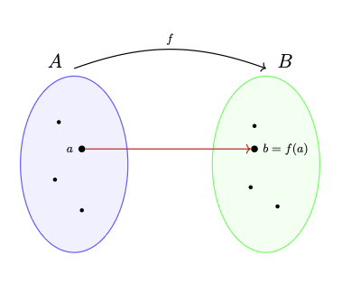
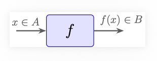
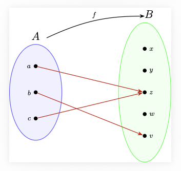
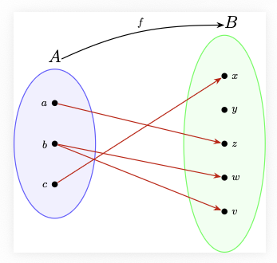
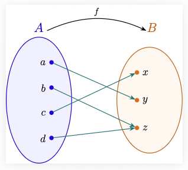
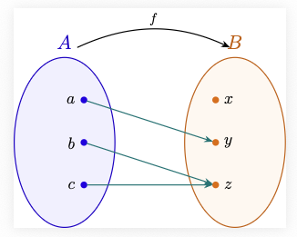
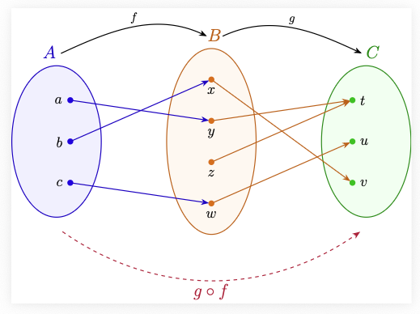

Todo el cálculo diferencial se desarrolla sobre el conjunto de los números reales \(\mathbb{R}\). Las propiedades que definen este conjunto, son las que permiten definir formalmente el concepto de límite, que es la idea central para el desarrollo del cálculo diferencial.
Los números naturales \(\mathbb{N}\)
La construcción de los números naturales \(\mathbb{N}\) es el paso inicial en la construcción de los números reales. Los naturales son el conjunto que usamos para contar, que generalmente escribimos como \(\mathbb{N}=\{1,2, \dots, n, \dots\}\). A pesar de que estamos muy acostumbrados a usar el conjunto de los números naturales, para tener una formalización matemática de este conjunto, tocó esperar hasta el siglo XIX, cuando en el año 1889, el matemático italiano Giuseppe Peano introdujo un conjunto de axiomas conocidos como los Axiomas de Peano. Existen otras construcciones de los números naturales, como por ejemplo la construcción a partir de la teoría de conjuntos, desarrollada por Ernst Zermelo y Abraham Fraenkel.
Antes de introducir los axiomas de Peano, definamos el concepto de función.
Funciones
De manera informal, una función es una regla de asignación entre dos conjuntos, un conjunto de salida \(A\) y un conjunto de llegada \(B\), que a cada elemento del conjunto \(A\) le asigna un único elemento del conjunto \(B\).
Una manera de representar las funciones es mediante un diagrama de flechas, como muestra la siguiente figura:

Otra forma de representar una función, es como una caja negra, con una entrada y una salida, donde al introducir en la caja un elemento \(x\) del conjunto \(A\), se produce una única salida \(f(x)\) del conjunto \(B\), como se muestra en la siguiente figura:

Ejemplo de función
Consideremos un conjunto con tres elementos \(A=\{a, b, c\}\) y un conjunto con cinco elementos \(B=\{x,y,z,w,v\}\). La asignación \(a \mapsto z\), \(b \mapsto v\) y \(c \mapsto z\) es un ejemplo de una función \(f\) representada gráficamente como:

Ejemplo de alguien que no es una función
Con los mismos conjuntos del ejemplo anterior, la figura

no representa una función, ya que al elemento \(b\) no se le está asignando un único elemento del conjunto \(B\), sino que se le están asignando dos elementos distintos, \(v\) y \(w\).
Definición formal de función
Recordemos que si \(A\) y \(B\) son dos conjuntos, el producto cartesiano \(A \times B\) se define como \[A \times B = \{(a,b) : a \in A, b \in B\}.\]
De manera formal, una función de un conjunto \(A\) a un conjunto \(B\), es un subconjunto \(F \subseteq A \times B\) tal que:
Para cada elemento \(a \in A\), existe un elemento \(b \in B\) tal que \((a,b) \in F\). (Todo elemento de \(A\) está relacionado con algún elemento de \(B\)).
Si \((a,b) \in F\) y \((a,c) \in F\), entonces \(b=c\). (Los elementos de \(A\) están relacionados con un único elemento de \(B\)).
Veamos que esta definición formal coincide con la noción informal anterior. Si \(F \subseteq A \times B\) es una función, la condición \((a,b) \in F\) la vamos a escribir como \(b=f(a)\), y a la función \(F \subseteq A \times B\) la representaremos por \(f: A \rightarrow B\). Con esta notación, 1) se convierte en: para todo \(a \in A\) existe \(b \in B\) tal que \(b=f(a)\), es decir, a cada elemento de \(A\) le corresponde un elemento de \(B\), y la condición 2) se traduce en: si \(f(a)=b\) y \(f(a)=c\) entonces \(b=c\), lo que garantiza que a cada elemento de \(A\) le corresponde un único elemento de \(B\).
Ejemplo interactivo de función
En el siguiente ejemplo interactivo, al decidir la asignación de flechas que a cada elemento del conjunto \(A\) lo apareja con un único elemento del conjunto \(B\), se está construyendo una función \(f: A \rightarrow B\), que en la parte de abajo es representada de manera formal como un subconjunto de \(A \times B\).
Haz clic en un círculo del Conjunto A y luego en uno del Conjunto B para trazar la flecha.
Ejemplo interactivo de función.
Notación para las funciones
De ahora en adelante, denotaremos a una función \(F \subseteq A \times B\) como \(f: A \rightarrow B\) donde para cada \(a \in A\) denotaremos por \(f(a)\) al único elemento del conjunto \(B\) tal que \((a,f(a)) \in F\). El conjunto \(A\) recibe el nombre de conjunto de salida o dominio de la función \(f\), y el conjunto \(B\) recibe el nombre de conjunto de llegada o codominio de la función \(f\).
Otros ejemplos de funciones
Supongamos que \(A \subseteq B\) es un subconjunto. Definimos la función inclusión \(i: A \rightarrow B\), como la función que a cada elemento \(a \in A\) le asigna el mismo elemento \(a \in B\), es decir, \(i(a)=a\) para todo \(a \in A\). Si vemos esta función como un subconjunto de \(A \times B\), tenemos que el subconjunto correspondiente es \(\{(a,a): a \in A\} \subseteq A \times B\), que claramente satisface las dos condiciones de la definición formal de función.
Supongamos que tenemos dos conjuntos \(A\) y \(B\). Definimos las funciones proyecciones \(\pi_{1}: A \times B \rightarrow A\) y \(\pi_{2}: A \times B \rightarrow B\) como \(\pi_{1}(a,b)=a\) y \(\pi_{2}(a,b)=b\) para todo \((a,b) \in A \times B\). Los respectivos conjuntos correspondientes a estas funciones son \[\{((a,b),a): (a,b) \in A \times B\} \subseteq (A \times B) \times A\] y \[\{((a,b),b): (a,b) \in A \times B\} \subseteq (A \times B) \times B,\] que satisfacen las dos condiciones de la definición formal de función.
El siguiente diagrama ilustra una forma de representar las funciones proyecciones.
Funciones proyecciones
¿Cuándo dos funciones son iguales?
Formalmente, dos funciones de \(A\) a \(B\) son iguales, si definen el mismo subconjunto de \(A \times B\). Con nuestra nueva notación, dos funciones \(f: A \rightarrow B\) y \(g: C \rightarrow D\) son iguales, si \(A=C\), \(B=D\) y \(f(a)=g(a)\) para todo \(a \in A\).
Pregunta
En ejemplo interactivo de función, ¿cuántas funciones distintas se pueden construir?
Funciones sobreyectivas e inyectivas
Observe que en la definición de función \(f:A \rightarrow B\), se permite que elementos del conjunto \(B\) no estén relacionados con ningún elemento del conjunto \(A\), es decir, puede existir un elemento \(b \in B\) para el cual no existe ningún \(a \in A\) tal que \(b=f(a)\), o de manera equivalente, tal que \((a,b) \notin F \subseteq A \times B\).
Por ejemplo, en la función
los elementos \(x,y,w \in B\) no están relacionados con ningún elemento del conjunto \(A\), es decir, no existen elementos en \(A\) que se relacionen con \(x\), \(y\) o \(w\).
Función sobreyectiva: Una función \(f: A \rightarrow B\) es sobreyectiva si todos los elementos de \(B\) quedan relacionados con elementos de \(A\), es decir, si para cada \(b \in B\) existe un \(a \in A\) tal que \(f(a) = b\).
Por ejemplo, la función

es sobreyectiva, ya que todos los elementos del conjunto \(B\) están relacionados con algún elemento del conjunto \(A\).
Pregunta
¿Es posible construir una función sobreyectiva \(f: \{a,b,c\} \rightarrow \{x,y,z,w\}\)?
Esta pregunta es equivalente al siguiente problema:
Intente introducir las letras x,y,z,w en las cajas, sin colocar mas de una letra en cada caja
Arrastra cada letra a una caja. Cada letra solo puede usarse una sola vez (se deshabilita al ser asignada, pero reaparece si la borras).
Principio del palomar
El problema anterior es un ejemplo del Principio del Palomar, que establece que si hay más palomas que palomares y se quieren guardar todas las palomas en los palomares, obligatoriamente en algún palomar se tendrán que ubicar por lo menos dos palomas.
Ejemplos de funciones sobreyectivas
Si \(A\) es un conjunto, definimos la función identidad \(\textrm{id}_{A}: A \rightarrow A\) que a cada elemento \(a \in A\) le asigna el mismo elemento \(a \in A\), es decir, \(\textrm{id}_{A}(a)=a\). Esta función como subconjunto de \(A \times A\) corresponde a \(F=\{(a,a)~ :~ a \in A\}\). Esta función es claramente sobreyectiva, ya que todo elemento del conjunto de llegada \(a \in A\) está relacionado con el mismo elemento \(a \in A\) del conjunto de salida.
Si \(A\) y \(B\) son conjuntos, las funciones proyecciones \(\pi_{1}: A \times B \rightarrow A\) y \(\pi_{2}: A \times B \rightarrow B\) definidas como \(\pi_{1}(a,b)=a\) y \(\pi_{2}(a,b)=b\) para todo \((a,b) \in A \times B\), son sobreyectivas. Como se puede ver en el siguiente gráfico, un elemento \(a \in A\) está relacionado con todos los elementos de la linea roja vertical continua por medio de la función \(\pi_{1}\), y un elemento \(b \in B\) está relacionado con todos los elementos de la linea azul horizontal continua por medio de la función \(\pi_{2}\).
Sobreyectividad de las funciones proyecciones
Funciones inyectivas
En la definición de función \(f:A \rightarrow B\), sabemos que cada elemento de \(A\) tiene que estar conectado con un único elemento de \(B\), pero en la definición de función se permite que dos elementos distintos del conjunto \(A\) estén relacionados con el mismo elemento del conjunto \(B\), es decir, puede existir un elemento \(b \in B\) para el cual existen dos elementos distintos \(a_{1}, a_{2} \in A\) tal que \(b=f(a_{1})=f(a_{2})\), o de manera equivalente, tal que \((a_{1},b), (a_{2},b) \in F \subseteq A \times B\).
Por ejemplo, en la función del siguiente gráfico,

los elementos \(b\) y \(c\) se relacionan con el mismo elemento \(z \in B\), es decir, \(f(b)=z=f(c)\).
Uno función es inyectiva si no ocurre lo anterior, es decir:
Función inyectiva: Decimos que una función \(f: A \rightarrow B\) es inyectiva si para cada elemento \(b \in B\) existe a lo sumo un elemento \(a \in A\) tal que \(f(a) = b\), es decir, no existen dos elementos distintos de \(A\) que se relacionen con el mismo elemento de \(B\). De manera equivalente, \(f(a_1) = f(a_2)\) implica \(a_1 = a_2\) (la única forma que de hayan dos flechas llegando un mismo elemento, es que sean la misma flecha).
Del gráfico Sobreyectividad de las funciones proyecciones, podemos ver que las funciones \(\pi_{1}: A \times B \rightarrow A\) y \(\pi_{2}: A \times B \rightarrow B\) no son inyectivas, ya que dado \(a \in A\) todos los elementos de la línea roja vertical continua se relacionan con el mismo elemento \(a \in A\), y dado \(b \in B\) todos los elementos de la línea azul horizontal continua se relacionan con el mismo elemento \(b \in B\).
Ejemplos de funciones inyectivas
Si \(A\) es un conjunto, la función identidad id\(\textrm{id}_{A}: A \rightarrow A\) que a cada elemento \(a \in A\) le asigna el mismo elemento \(a \in A\), es decir, \(\textrm{id}_{A}(a)=a\), es una función inyectiva.
Si \(A\) y \(B\) son conjunto y fijamos un elemento \(b_{0} \in B\), entonces la función constante \(f: A \rightarrow A \times B\) definida como \(f(a)=(a,b_{0})\) para todo \(a \in A\), es inyectiva, ya que si \(f(a_1)=f(a_2)\), entonces \((a_1,b_{0})=(a_2,b_{0})\), lo que implica \(a_1=a_2\).
Ejemplo interactivo de función sobreyectiva
Haz clic en un elemento del Conjunto A y luego en uno del Conjunto B para asignar la función, de tal manera que quede sobreyectiva.
Construyendo una función sobreyectiva
Pregunta
¿Cuántas funciones sobreyectivas distintas se pueden construir en Construyendo una función sobreyectiva ?
Ayuda: Encuentre cuántas funciones que no sean sobreyectivas se pueden construir y réstelas del total de funciones posibles.
Imagen de una función: Dada una función \(f:A \rightarrow B\) definimos su imagen que denotaremos \(\textrm{im}(f) \subseteq B\) como el conjunto de todos los elementos de \(B\) que están relacionados con algún elemento de \(A\), es decir, \(\textrm{im}(f)=\{b \in B~ :~ \textrm{existe}~ a \in A~ \textrm{con}~ f(a)=b\}\).
Una función \(f: A \rightarrow B\) es sobreyectiva si y solo si \(\textrm{im}(f)=B\).
Ejemplo interactivo de función inyectiva
Haz clic en un elemento del Conjunto A y luego en uno del Conjunto B para definir la función, de tal manera que sea inyectiva.
Construyendo una función inyectiva
Pregunta
¿Cuántas funciones inyectivas distintas se pueden construir en Construyendo una función inyectiva?
Funciones biyectivas
Una función \(f: A \rightarrow B\) es biyectiva si es inyectiva y sobreyectiva.
Por ejemplo la función identidad \(\textrm{id}_{A}: A \rightarrow A\) es biyectiva, ya que es inyectiva y sobreyectiva.
Pregunta
¿Es posible construir una función biyectiva en Construyendo una función sobreyectiva o en Construyendo una función inyectiva?
Ejemplo interactivo de función biyectiva
Haz clic en un elemento del Conjunto A y luego en uno del Conjunto B para definir la función, de tal manera que sea biyectiva
Construyendo una función biyectiva
Pregunta
¿Cuántas funciones biyectivas distintas se pueden construir en Construyendo una función biyectiva?
Composición de funciones
En algunos casos, bajo ciertas condiciones, es posible construir una función a partir de dos funciones dadas. Si tenemos por ejemplo una función \(f: A \rightarrow B\) y \(g: B \rightarrow C\), a un elemento \(a \in A\) le corresponde un único elemento \(f(a) \in B\) por ser \(f\) una función, pero como \(g\) también es función, a este elemento \(f(a) \in B\) le corresponde un único elemento \(g(f(a)) \in C\). Lo anterior nos permite asignarle a cada elemento \(a \in A\) un único elemento \(g(f(a)) \in C\). Lo anterior es la definción de la compuesta o composición de dos funciones.
Composición de funciones: Dadas dos funciones \(f:A \rightarrow B\) y \(g:B \rightarrow C\), definimos la compuesta de \(g\) con \(f\) que denotaremos por \(g \circ f: A \rightarrow C\), como \(g \circ f(a)=g(f(a))\).
Por ejemplo, en el gráfico

se muestran las funciones \(f\) y \(g\). Al hacer la composición de \(g\) con \(f\) obtenemos la función \(g \circ f\), que envía: \(\begin{equation*}\begin{aligned} a \mapsto g(f(a))=g(y)=t\\ b \mapsto g(f(b))=g(x)=v \\ c \mapsto g(f(c))=g(w)=u \end{aligned}\end{equation*}\)
para determinar a donde envía cada elemento de \(A\), basta seguir el camino de las flechas, es decir, \(g \circ f\) envía \(a \mapsto t\), \(b \mapsto v\) y \(c \mapsto u\).
Una propiedad importante de las funciones inyectivas, es que si \(f: A \rightarrow B\) es inyectiva, al reversar las flechas se obtiene una función \(f^{-1}: \textrm{im}(f) \rightarrow A\).
Función Inyectiva e Inversión de Flechas
Paso 1: Haz clic en un elemento del Conjunto A.
Paso 2: Haz clic en un elemento del Conjunto B para asignarle su imagen.